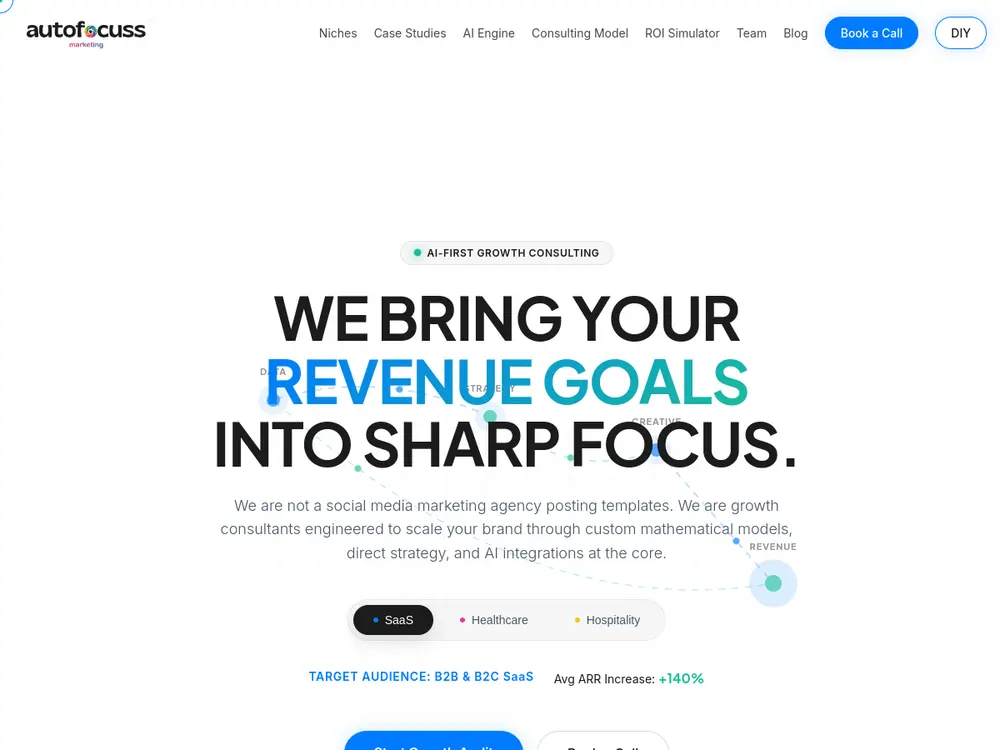

Symptom 01
Invisible for your own services
You rank for your brand name and nothing else. Every customer who does not already know you is finding a competitor instead.

Search Engine Optimisation
Paid clicks stop the day you stop paying. Organic visibility compounds. We build it in the order that works: technical health first, commercial intent second, authority third.
6–8
Weeks to first technical gains
4
Months to compounding growth
6
SEO specialisms
0
Paid link schemes used
01 — The point
The commercial objective is qualified enquiries at a declining acquisition cost. Rankings are how that happens, which is why we care much more about a first position on a term with buying intent than a first position on a term with volume.
This has consequences you will notice. Our keyword maps are smaller than most agencies produce, because we cut terms that generate research traffic rather than customers. Our reports lead with assisted conversions rather than total sessions. And we will tell you when a term is not worth pursuing because the results page is dominated by directories and marketplaces you cannot displace.
The sequencing argument Publishing content on a site search engines cannot crawl properly is expensive activity with no return. That is why technical remediation comes first even when it produces nothing visible for six weeks.
02 — Symptoms
Each has a different first action, which is why the audit precedes the proposal.
Symptom 01
You rank for your brand name and nothing else. Every customer who does not already know you is finding a competitor instead.
Symptom 02
Sessions look healthy and the form stays quiet. Usually the content targets informational intent while the business needs commercial intent.
Symptom 03
A migration went out without a tested redirect map or content parity. This is recoverable, and the recovery is mostly mechanical.
Symptom 04
Several near-identical city pages compete for the same query, so none of them establishes itself as the relevant result.
Symptom 05
Thousands of products, a fraction indexed. Faceted navigation is generating crawl traps and consuming the budget meant for real pages.
Symptom 06
Every enquiry has a click cost attached, and margins compress every time a competitor raises their bids.
03 — Capabilities
Most programmes use three or four of these. Which ones depends entirely on what the audit finds.
Crawl budget, indexation control, canonicalisation, Core Web Vitals, structured data and log-file analysis where scale justifies it.
Business Profile optimisation, citation accuracy, review strategy and location pages with genuine local substance.
Category taxonomy, faceted navigation rules, product schema and handling of variants, out-of-stock and discontinued lines.
Intent mapping, content depth against what actually ranks, and an internal linking model that concentrates rather than dilutes authority.
Earned links via useful content and digital PR, plus accurate citations. No networks, no purchased placements.
Governance for large sites: templating rules, cannibalisation control and prioritisation across competing internal teams.
Shape of a typical programme, not a forecast. Actual movement depends on market competitiveness and content production rate. Illustrative
04 — Process
Six months is the shortest sensible commitment for competitive commercial terms.
Weeks 1–3
Full technical crawl, Search Console and analytics review, competitor gap analysis, and a keyword map organised by intent rather than volume. Output is a prioritised list where each item states the expected effect.
Weeks 3–8
Crawl and indexation fixes, canonical and redirect corrections, structured data, Core Web Vitals work. Unglamorous, and the phase that determines whether everything after it can succeed.
Months 2–6
Existing pages strengthened before new ones are added, cannibalisation resolved, then new pages against mapped intent gaps with the internal linking planned rather than incidental.
Months 3–12
Earned links from content worth citing, digital PR, and citation accuracy for local. Deliberately slower than link-buying, and it does not carry the risk of a manual action.
Ongoing
Monthly reporting on organic sessions, intent-group coverage, technical health and assisted conversions — including which hypotheses failed and what we are changing as a result.
05 — Tooling
06 — Industries
Competitive dynamics differ enough that sector experience shortens the diagnosis.
07 — Evidence
Each of these was built or rebuilt around a search architecture: clean taxonomy, crawlable templates, and pages that answer a real query.
See all 28 projects
Parts catalogue restructured for category-level search visibility.

Clinic site with per-location landing pages and booking intent tracking.
Tour operator site with itinerary templates and enquiry routing.
08 — Why us
Common approach
Neoteric ERA
Technical fixes can show measurable movement within six to eight weeks. Content-driven growth on competitive commercial terms generally compounds from month four onward.
Anyone promising rankings in thirty days is either describing paid search or targeting terms nobody searches for.
No, and neither can anyone else honestly. Nobody controls the ranking algorithm or what competitors do next.
What we commit to is the work: technical remediation, content depth against mapped intent, and monthly reporting on organic sessions, keyword coverage and assisted conversions so you can judge progress on evidence rather than promises.
We pursue earned links through genuinely useful content, digital PR and legitimate industry placements, plus accurate local citations.
We do not use private blog networks, paid link schemes or automated outreach. Those carry a real risk of manual action, and the recovery costs more than the gains.
Yes — most of our SEO clients came with an existing site. We begin with a technical audit and tell you plainly whether the platform can support the programme.
Occasionally the honest answer is that remediation costs more than a rebuild, and we will say so rather than bill for years of workarounds.
With a location architecture where each page carries genuinely differentiated content: local market context, relevant sectors, service areas and locally relevant proof.
Pages that only swap a city name compete with each other and rank for nothing. We also gate which service-by-city pages get built rather than generating every permutation.
A monthly report covering organic sessions and their trend, keyword coverage by intent group, technical health changes, work completed, and assisted conversions attributed to organic.
It includes what did not work. You retain full access to Search Console and GA4 throughout.
Related
When the platform itself is the constraint, remediation is a workaround and a rebuild is the fix.
ExploreCovers the gap while organic builds, and reveals within a week which messaging converts — evidence organic then borrows.
ExploreContent depth is the engine of organic growth after the technical foundation is sound.
Explore
Next step
We will tell you what is actually limiting your visibility and what it would take to fix — including whether the honest answer is that you do not need a monthly programme.